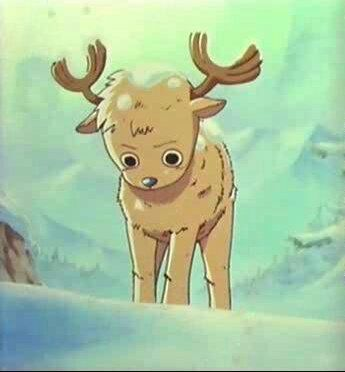
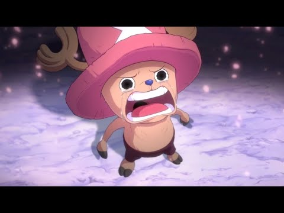

Etapas de Chopper en One Piecce
🔹 Fase 1 — Orígenes / Infancia y descubrimiento (pre-Doctor)

- Chopper nació como un reno normal, con nariz azul — algo que lo hacía diferente y fue rechazado por su propia manada.
- Comió la Hito Hito no Mi (fruta del diablo tipo Zoan humana), lo que le permitió transformarse en humano-reno, ganar inteligencia, y desarrollarse de otra forma.
- Luego fue rescatado por Dr. Hiriluk, quien lo adoptó y le enseñó valores, compasión y el deseo de ayudar.
🔹 Fase 2 — Encuentro con la tripulación / Unión a los Sombrero de Paja

- Tras los eventos en Drum Island, y tras la muerte de Hiriluk + aprendizaje con Kureha, Chopper toma la decisión de unirse a la tripulación de Monkey D. Luffy (los Straw Hat Pirates) como su médico oficial.
- Acepta su lugar, confianza en sus compañeros, y su sueño de curar enfermedades y proteger a quienes lo necesiten empieza a cobrar un sentido real junto a su nueva “familia”.
🔹 Fase 3 — Desarrollo, medicina, aceptación / crecimiento dentro de la tripulación

- Chopper desarrolla sus habilidades médicas: aprende medicina, tratamiento de enfermedades, uso de hierbas y remedios, lo que lo convierte en una pieza clave del equipo.
- Al mismo tiempo, explora su poder: su fruta del diablo le permite transformarse en múltiples “formas/puntos” — como reno, híbrido, humano — y con el uso de su invención, la Rumble Ball, puede acceder a transformaciones adicionales, algunas de combate, otras de utilidad.
- Sus experiencias junto a la tripulación, sus heridas, sus luchas, le dan confianza progresiva, su autoestima mejora; deja de verse como “monstruo/extraño” y acepta quién es.
🔹 Fase 4 — Post-Timeskip / Maestro de transformaciones, valor, pertenencia & papel clave

- Tras el “timeskip” (los dos años de separación con su tripulación), Chopper madura: domina varias de sus transformaciones sin necesidad de usar la Rumble Ball, optimiza sus habilidades, perfecciona su rol como médico.
- En batalla, puede usar sus múltiples formas (según necesidad — velocidad, fuerza, defensa, inteligencia), lo que lo convierte en un miembro versátil y eficaz de los Straw Hat.
- A nivel emocional, está más seguro de sí mismo, más consciente de su valor, su propósito y su lugar en la tripulación. Ya no sufre tanto por ser rechazado — ahora tiene aceptación, amistad, familia y propósito.